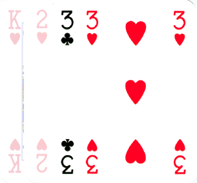

C'est une très bonne
question !
Il y a beaucoup de cas pour lesquels il vous faudra taper si
vous voulez récupérer des cartes.
Les rèles officielles (pas toujours respectées…) nous disent
de taper seulement lorsque deux cartes identiques se suivent.
On appelle cette règle le "double".
Exemple: 
Pour rendre le jeu plus interessant, d'autres règles
ont été rajoutées, permettant aux joueurs de taper plus souvent
sur le tas (ou les mains des autres).
Une ou plusieurs de ces variantes peuvent êtres choisies selon
l'âge ou le niveau des joueurs :


Il existe aussi les Hamburgers, aussi appelés Big-Macs, avec deux cartes au milieu ; et les Hamburgers-dix, c'est encore pareil.